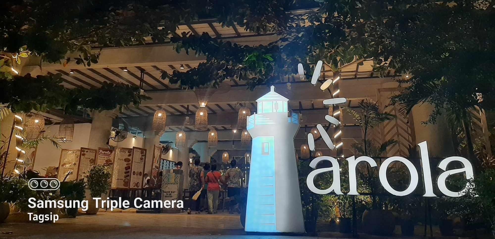
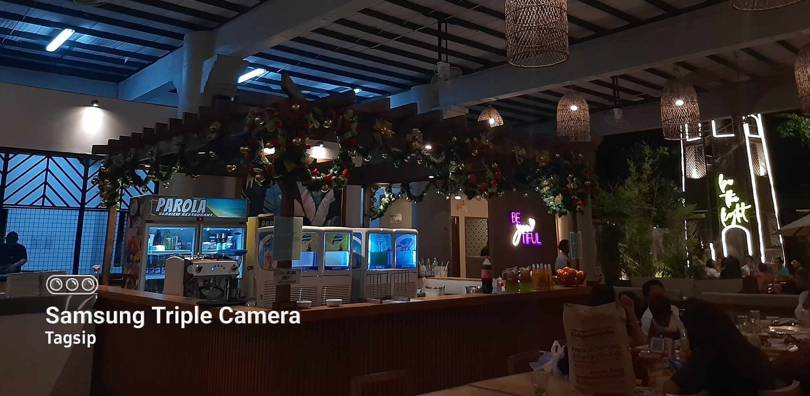

Parola
Booking confirmed within 1 working day(s)
Duration: 4 hr(s)
Guided language: English/日本語
Free cancellation 4 day(s) prior to experience date
Present e-voucher on-site
Enjoy authentic Filipino food while gazing at the ocean in an open,
hidden restaurant in Cordova District of Mactan Island.
Immerse yourself in the beautiful ambiance of the ocean and the dazzling sun views.
— What You Can Expect —
Enjoy authentic Filipino food and view breathtaking views of the ocean at the Parola Seaview Restaurant in Cordova. For dessert, savor the Philippine sweet Halo-halo , which is famous in the world and comes with ube (purple sweet potato) cheese flavor.

